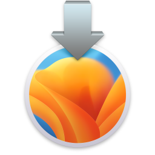

请访问原文链接：macOS Ventura 13 beta 3 Update (22A5295i) ISO、IPSW、PKG 下载，查看最新版。原创作品，转载请保留出处。
作者主页：www.sysin.org
抄袭者 macz、qq_23930765、hanzheng260561728 请远离本站！！！
2022 年 6 月 7 日
台前调度等新功能帮助 Mac 用户保持专注、提高生产力

macOS Ventura 发布公告
在 WWDC22 上面世的 macOS Ventura 让 Mac 体验更胜以往。
加利福尼亚州，库比提诺，Tim Cook 领导的 Apple 今日发布了 macOS Ventura 预览版，这是全球领先的桌面操作系统 macOS 的最新版本，将把 Mac 体验带入全新境界。台前调度为 Mac 用户提供一种全新方式，让用户在专注于眼前工作的同时，也能在各类 app 与窗口之间无缝切换。连续互通相机将 iPhone 用作为 Mac 的网络摄像头，可实现更多前所未有的操作 (sysin)。FaceTime 通话迎来接力功能，用户可在 iPhone 或 iPad 上开始 FaceTime 通话，然后无缝转移到 Mac 上。邮件 app 与信息 app 双双新增重大功能，用途更强大。Mac 上速度领先的 Safari 浏览器 (sysin)引入通行密钥，就此开启无密码时代。强大 Apple 芯片的广泛应用与 Metal 3 内置的新款开发者工具，让 Mac 的游戏体验更进一步。
“macOS Ventura 带来强大功能与锐意创新，让 Mac 体验更胜以往。台前调度等新工具让用户专注投入任务，并能更加简捷地在各类 app 与窗口之间切换；连续互通相机为所有 Mac 机型带来全新视频会议功能，包括桌面视图、摄影室灯光等等。”Apple 软件工程高级副总裁 Craig Federighi 表示，“凭借信息 app 的实用新功能，邮件 app 的先进搜索技术，以及聚焦搜索的最新设计，Ventura 潜力无穷，将可极大地丰富用户使用 Mac 的方式。”

台前调度等新功能帮助用户保持专注。

连续互通相机可让用户实现更多前所未有使用网络摄像头的新功能。
其他主要更新包括：
- Safari 浏览器的共享标签页组让众人通过网络协作更加轻松
- 邮件 App 搜索增强，定时发送等新功能
- Mac 版信息 app 现可编辑或撤销刚刚发送的信息，将信息标记为未读，甚至还能恢复不小心删除的信息
- 聚焦搜索迎来设计更新，更加便于导览，同时新增多项功能
- Metal 迎来最新版本 Metal 3
- 实况文本新增对暂停视频帧的文本识别能力，以及对日语和韩语文本的支持
- 系统偏好设置更名为系统设置，采用全新精简设计，与 iOS 体验更加连贯
- macOS 的安全性再次提升，多款新工具增强了 Mac 抵御攻击的能力
- Safari 浏览器安全性升级
另外几个早应该有的功能终于来了 (sysin)，比如：Facetime Handoff，“天气” 和 “时钟” App，更多说明请参看：
推出时间:
macOS Ventura 开发者测试版将于今日起在 developer.apple.com/cn 面向 Apple Developer Program 会员提供。Public Beta 版本将于下月在 beta.apple.com 面向 Mac 用户推出。macOS Ventura 将在今年秋天作为免费软件更新推出。如需了解更多信息，包括兼容的 Mac 机型，请访问 macos-ventura-preview。功能可能会有所差异。某些功能仅适用于部分地区、语言或设备。
硬件兼容性列表
看看你的 Mac 是否能用 macOS Ventura
- MacBook 2017 年及后续机型 进一步了解>
- MacBook Air 2018 年及后续机型 进一步了解>
MacBook Pro 2017 年及后续机型 进一步了解>
Mac mini 2018 年及后续机型 进一步了解>
- Mac Studio 2022 年机型 进一步了解>
Mac Pro 2019 年及后续机型 进一步了解>
iMac 2017 年及后续机型 进一步了解>
- iMac Pro 2017 年机型 进一步了解>
如果你的 Mac 不在兼容性列表，参看：在不受支持的 Mac 上安装 macOS Big Sur、Monterey、Ventura (OpenCore Legacy Patcher)
下载 macOS Ventura
如何校验本站下载的文件的完整性
(1) ISO 格式软件包
可引导镜像，可以直接安装或者升级，也可以启动虚机安装。

macOS 13 beta 3 Update (22A5295i) 今日凌晨发布，更新了漂亮的安装图标，修复了 beta 2 需要输入密码的问题
百度网盘链接：https://pan.baidu.com/s/1oJBDe6lZxvEwW2puwi8Dxw 提取码：oh1c
SHA256SUM：6c21c5a789fd6bd84301cf0c373d3db80e5ff7118fa1890da23fed06818a15d1macOS 13 beta 2 (22A5286j)
百度网盘链接：https://pan.baidu.com/s/1Q6xsD2fiN8Oa8MosIV1FKQ 提取码：jn3p
SHA256SUM：c0e87d979467f2ac07be9e1869f395d7efad321af46d072597a1d9a8cb64e95cmacOS 13 beta (22A5266r)
百度网盘链接：https://pan.baidu.com/s/1r6ASNaUDzy3rFkktEJ8ejA 提取码：574r
SHA256SUM：6d53148c397d83599c202a209b42c78ab041c3e446debeda4d17294424dba6de
参看：如何在 Mac 和虚拟机上安装 macOS Big Sur、Monterey 和 Ventura
(2) PKG 格式软件包
该格式软件包双击运行后将自动安装在
/Applications下。
macOS 13 beta 3 Update (22A5295i)
百度网盘链接：https://pan.baidu.com/s/1P86FGeq5N4gzayQbO_xVcQ 提取码：kasj
SHA256SUM：a4ef49444a3805f6e4741c131e24406357ab0f4de97840d4727965bc3c2ee7f2macOS 13 beta 2 (22A5286j)
百度网盘链接：https://pan.baidu.com/s/1g-TYgdRYC-GSQO5fHUgI_w 提取码：di41
SHA256SUM：777cb031916ac026d6883bf1428296d65452cf8fb9abb7d5f421db3b5deb174cmacOS 13 beta (22A5266r)
百度网盘链接：https://pan.baidu.com/s/1Q3L6Cl0m61StK60bhxzmTA 提取码：kw3g
SHA256SUM：ff504aae369368b64f676c78a696b729f04fba6851b5946bdcf60d647b4c1917
(3) IPSW 固件（Apple 芯片 Mac 专用）
IPSW 格式为搭载 Apple 芯片的 Mac 专用镜像，其他格式通用。
- macOS 13 beta 3 Update (22A5295i)
百度网盘链接：https://pan.baidu.com/s/1j0WCzlWOtlXwXwpgAYLahg 提取码：9452
SHA256SUM：d15fea4666e9292f7cf798d7e20ca4c271378186ee24ca7f14276860fef7e308
参看：在 Apple Silicon Mac 上 DFU 模式恢复 macOS 固件
如何创建可引导的 macOS 安装器
促销信息：
>> 阿里云：新用户2核2G仅需9元/月，1核2G云服务器仅需87元/年（限时优惠，不定期更新）
>> 腾讯云：1核2G云服务器首年50元，爆款2核4G带宽8M只要74元/年（限时优惠，不定期更新）
如果文章中使用的内容或图片侵犯了您的版权，请联系作者删除。如果您喜欢这篇文章或者觉得它对您有所帮助，欢迎您发表评论，也欢迎您分享这个网站，或者赞赏一下作者，谢谢！
 支付宝赞赏
支付宝赞赏
 微信赞赏
微信赞赏
赞赏一下